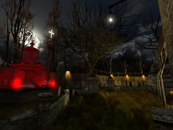
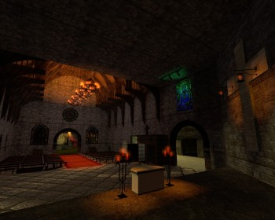
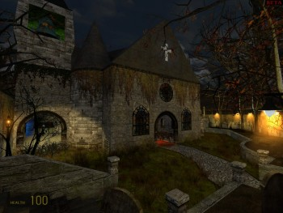
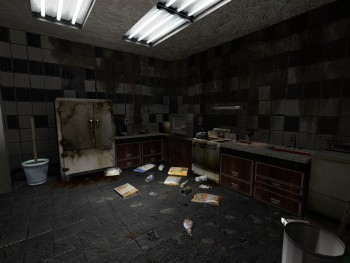
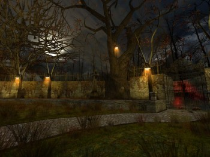
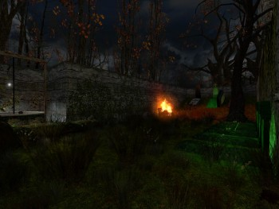
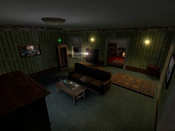
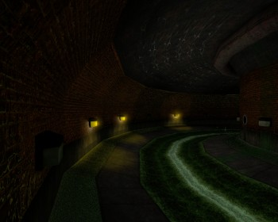
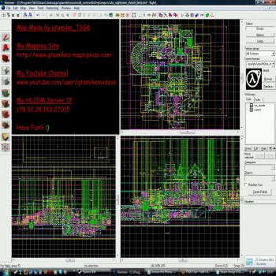

        
dm_nightmare_church (BETA5) Dec 28th 2011
This is a scary church map for HL2DM. The map took 8 months to build, alot of that time was making the map look nice.
I’m looking for feedback any kind so I can improve the map, so post what you think so far for this BETA stage!
View Beta updates that have been made so far.
Link https://www.bloodsuckers.de/topic.php?t=2789
The map has won “Map of the Month”
Link https://www.bloodsuckers.de/topic.php?t=2786
Keep an eye out for secrets/hidden things as I added lots.  This map is nearly out of a Beta
This map is nearly out of a Beta
—> Download (Beta 5) 59MB .BZ2 (Last Updated Dec 28th 2011)
https://gtamike.tsgk.com/my_maps/hl2mp/maps/dm_nightmare_church_b5.bsp.bz2
If you don’t have HL2 Deathmatch it’s for free with Nvidia / ATI cards
https://www.halflife2.net/forums/showthread.php?141652-HL2-Deathmatch-for-free-with-Nvidia-ATI-cards